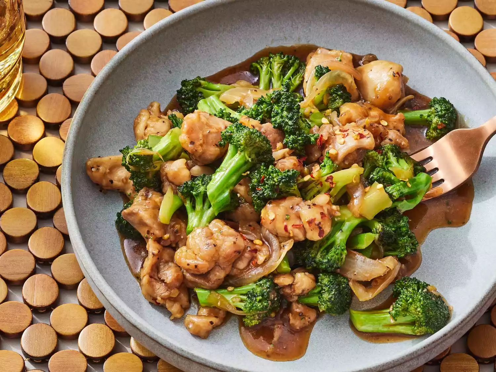

Chicken and Broccoli Stir-Fry

Chicken and Broccoli Stir-Fry Ingredients
These are the ingredients you’ll need to make this chicken and broccoli stir-fry recipe:
- Oil: This recipe starts with a neutral oil, such as canola oil heated in a skillet.
- Chicken: You’ll need a pound of boneless chicken thighs, cut into pieces.
- Cornstarch: Coating the chicken in cornstarch ensures a crispy exterior every time.
- Onion: Opt for a yellow onion, as it’s not too sweet and not too sharp.
- Ginger and garlic: Fresh ginger and fresh garlic take the flavor up a notch.
- Broccoli: Of course, you’ll need broccoli! Fresh is best, but frozen will work.
- Water: Start the sauce with ¾ cup water.
- Sauces: Soy sauce and oyster sauce are essential for this savory stir-fry.
- Brown sugar: Sweeten things up with a tablespoon of light brown sugar.
- Seasonings: Season the stir-fry sauce with crushed red pepper and black pepper.
How to make chicken and broccoli stir-fry
You’ll find the full, step-by-step recipe below — but here’s a brief overview of what you can expect when you make chicken and broccoli stir-fry:
- the chicken in cornstarch, then cook until crisp on all sides in hot oil.
- Add the onions, ginger, and garlic and cook. Transfer to a plate.
- Cook the broccoli in the skillet.
- Meanwhile, make the sauce.
- Add the chicken mixture to the broccoli, then add the soy sauce mixture.
- Cook until the chicken and broccoli are well-coated and the sauce is thickened.